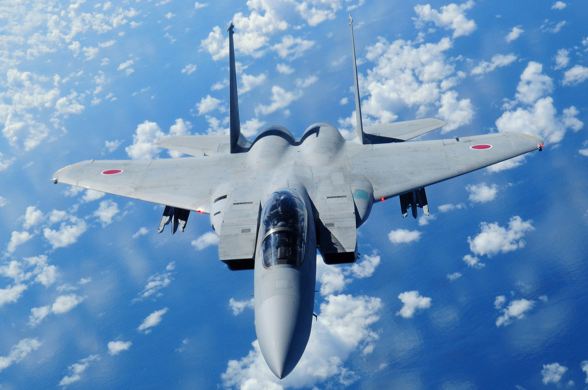

飛機圖片展示

F-15J
日本航空自衛隊主力戰鬥機， 擁有優秀空戰能力。
Mitsubishi MRJ
日本新世代支線客機， 強調低油耗與舒適性。

ANA Boeing 787
全日空長途航線主力客機， 廣泛應用於國際航班。
日本航空工業在亞洲具有重要地位， 無論是軍事航空還是民航科技， 都展現出高度工程技術與設計能力。
本網站收錄多款具代表性的飛機， 並透過圖片、表格與影片展示其特色， 同時作為 Python 爬蟲實驗網站。

日本航空自衛隊主力戰鬥機， 擁有優秀空戰能力。
日本新世代支線客機， 強調低油耗與舒適性。
全日空長途航線主力客機， 廣泛應用於國際航班。
| 機型 | 類型 | 最高速度 | 用途 |
|---|---|---|---|
| F-15J | 戰鬥機 | Mach 2.5 | 空中作戰 |
| MRJ | 客機 | 870 km/h | 區域航線 |
| Boeing 787 | 客機 | 913 km/h | 國際航線 |